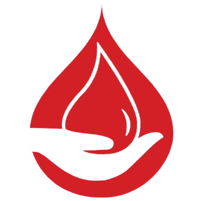
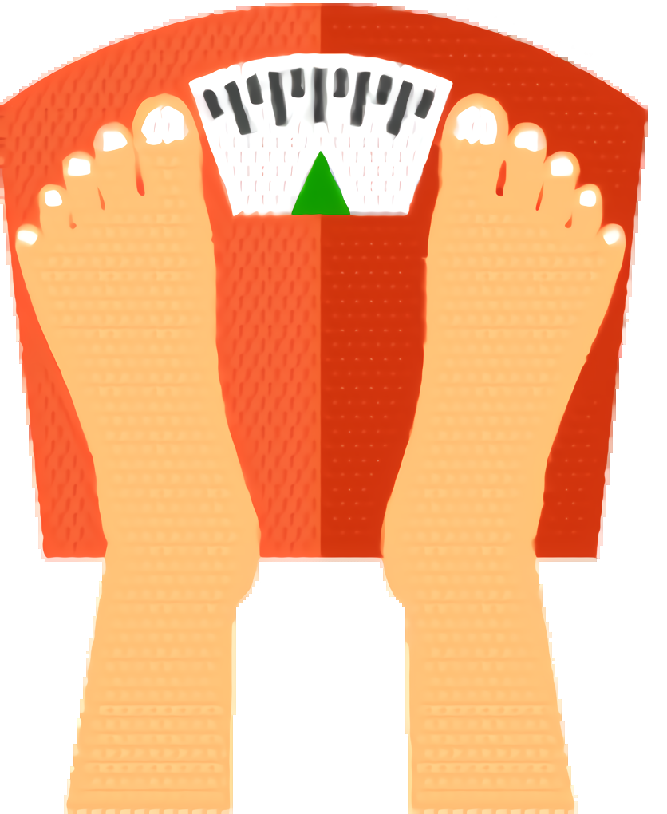
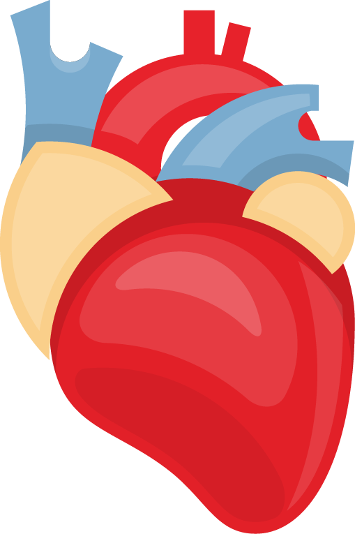
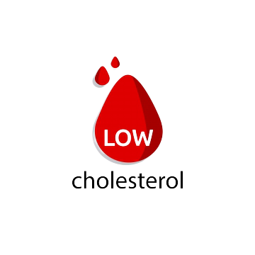
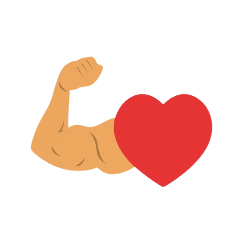
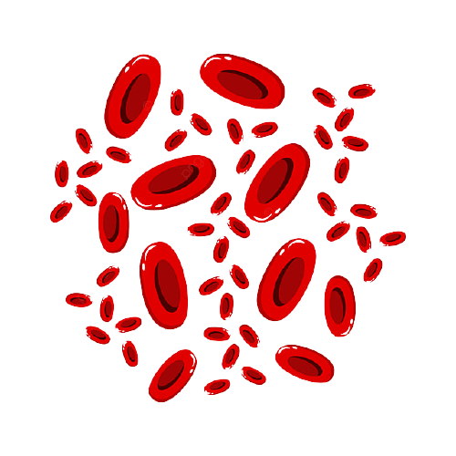
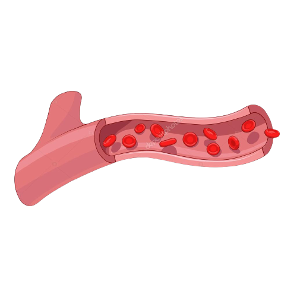

-
01
Syarat untuk menjadi donor darah?
Donor darah adalah orang yang memberikan darah secara sukarela untuk maksud dan tujuan transfusi darah bagi orang lain yang membutuhkan. Semua orang dapat menjadi donor darah jika memenuhi persyaratan yang berlaku.
1. Sehat jasmani dan rohani
2. Usia 17 sampai dengan 65 tahun.
3. Berat badan minimal 45 kg.
4. Tekanan darah :
sistole 100 - 170
diastole 70 - 100
5. Kadar haemoglobin 12,5g% s/d 17,0g%
6. Interval donor minimal 12 minggu atau 3 bulan sejak donor darah sebelumnya (maksimal 5 kali dalam 2 tahun)
-
02
Mengapa kita perlu donor darah?
Kebutuhan yang besar : Setiap delapan detik, ada satu orang yang membutuhkan transfusi darah di Indonesia.
Pemeriksaan kesehatan gratis : Sebelum mendonorkan darah, petugas akan memeriksa suhu tubuh, denyut nadi, tekanan darah dan kadar hemoglobin Anda.
Tidak menyakitkan : Ya Anda memang akan merasa sakit. Namun, rasa sakit itu tidak seberapa dan akan hilang dengan cepat.
-
03 Apa
yang harus kita persiapkan sebelum donor?
Kita memerlukan tidur yang nyenyak di malam sebelum mendonor, sarapan pagi atau makan siang sebelum mendonor. Banyak minum seperti jus, susu sebelum mendonor. Rileks saat mendonor, dan banyak minum setelah mendonor. Kita bisa melanjutkan kegiatan setelah mendonor, asal hindari aktivitas fisik yang berat.
Manfaat Donor

Satu Kantung Darah Dapat Menyelamatkan 3 Nyawa

Mampu Menurunkan Berat Badan

Melindungi Jantung

Menurunkan Kolesterol
Meningkatkan Kepeduliaan Terhadap Sesama

Mengatur Kontrol Kesehatan

Meningkatkan Sel Darah Merah
